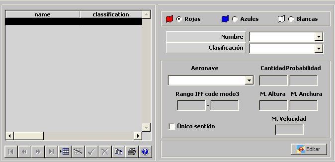
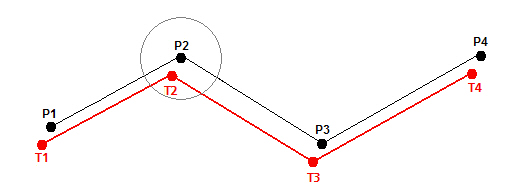
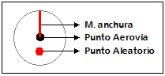

Aerovías

Mediante esta tabla se especifican todas las Aerovías incluidas en el Ejercicio, clasificadas por bando. Para cada una de ellas, se crearán al inicio del Ejercicio un número aleatorio de aeronaves del tipo especificado según el % de probabilidad asignado, repartidas aleatoriamente a lo largo de la aerovía. Durante el Ejercicio se moverán recorriendo la aerovía con todos sus radares e IFF encendidos, y con todos los modos de Responder del IFF, para los que tenga capacidad, activados.
Durante la ejecución del ejercicio, a cada unidad se le presenta en la Pantalla Táctica las Aerovías correspondientes a su bando y al bando neutral.
Para cada ruta se especifican los siguientes parámetros:
Aeronave: Este parámetro determina el tipo de aeronaves que se crearán en la Aerovía. Se podrá seleccionar de entre todas las unidades aviones ya incluidas en el Ejercicio, cuya plataforma sea de Tipo de Plataforma igual a Transport (ver apartado Plataformas Aviones).
Cantidad: Este parámetro determina la cantidad máxima de aeronaves que se crearán en la Aerovías.
Unidades: ---
Rango: 0 – 99
Probabilidad: Este parámetro determina la probabilidad de que se cree cada aeronave en esta Aerovía, con el fin de que el número de aeronaves en esta aerovía sea variable en distintas ejecuciones del Ejercicio.
Unidades: ---
Rango: 0 – 100
Rango IFF code modo3: Este parámetro determina el rango de códigos IFF que se asignan a las aeronaves de forma aleatoria.
Unidades: 4 dígitos en octal
Rango: 1111 – 7777
M. Altura: Este parámetro determina el margen de variación de la altura y se utiliza para calcular la altura de la aeronave en cada tramo de la aerovía. El uso de este parámetro se describe al final de este apartado.
Unidades: Pies
Rango: 0.0 – 100000.0
M. Anchura: Este parámetro determina el margen de anchura de la aerovía y se utiliza para calcular la trayectoria recorrida por cada aeronave. El uso de este parámetro se describe al final de este apartado.
Unidades: Millas
Rango: 0.0 – 100.0
M. Velocidad: Este parámetro determina el margen de variación de la velocidad de la aeronave y se utiliza para calcular la velocidad de la aeronave en cada tramo de la aerovía. El uso de este parámetro se describe al final de este apartado.
Unidades: Nudos
Rango: 0.0 – 1000.0
Único Sentido: Este parámetro determina si la aerovía es de único sentido, en cuyo caso, si la aeronave llega al punto final, inicia de nuevo el recorrido desde el principio. En caso contrario, al llegar al final iniciará el recorrido en sentido contrario.
Editar: Mediante este botón se abre la ventana de Preparación de Escenarios, sobre la que se mostrará una Herramienta de Dibujo con la que se podrá especificar gráficamente los puntos de la Aerovía (ver la descripción de esta herramienta en el apartado Preparación de Escenario).
Cada punto incluye los siguientes parámetros:
Se considera como valores de Velocidad y Nivel de Vuelo para cada tramo de la aerovía, los valores correspondientes asignados al punto al que se dirige la unidad. Un tramo, por tanto podrá tener valores de parámetros distintos en función del sentido (ida o vuelta) del movimiento de la unidad, si estos valores son distintos para los puntos inicial y final que definen el tramo.
Con los parámetros definidos, la aerovía se define como una línea que une los puntos especificados sobre la carta mediante la Herramienta de Dibujo que se abre con el botón Editar, con un número aleatorio de aeronaves del tipo especificado que se desplazan en las proximidades de esta línea con una velocidad y altura variables dentro de los límites establecidos.
Durante la ejecución del ejercicio, las aeronaves que se crean en la aerovía no se desplazan directamente sobre la línea de ruta sino sobre una línea aleatoria cercana que se calcula de la siguiente forma:


Velocidad de la aeronave
En cada punto de la ruta se calcula una nueva velocidad, eligiéndola de forma aleatoria dentro del margen que se detalla a continuación:
Velocidad máxima = Velocidad en el tramo + M. Velocidad
Velocidad mínima = Velocidad en el tramo – M. Velocidad
Altura de la aeronave
En cada punto de la ruta se calcula una nueva altura, eligiéndola de forma aleatoria dentro del margen que se detalla a continuación:
Altura máxima = Nivel de Vuelo en el tramo + M. Altura
Altura mínima = Nivel de Vuelo en el tramo – M. Altura
Nota: Las aeronaves vuelan a alturas pares (múltiplos de 1000) cuando se desplazan en la dirección que marca el orden de los puntos de la aerovía y a alturas impares (múltiplo de 500) cuando se desplazan en sentido contrario. Por tanto en el cálculo de la altura se asignará el valor válido (múltiplo de 1000 o de 500) más próximo al valor aleatorio obtenido.